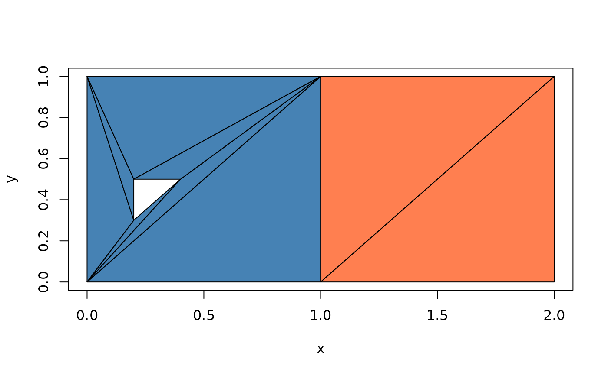
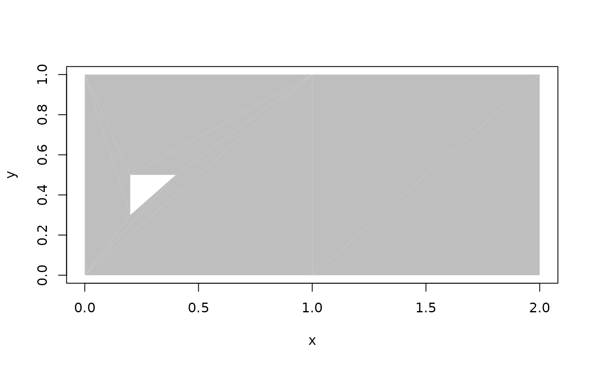

Draws every triangle with one call to graphics::polygon(), indexing the
vertex pool directly (triangles separated by NA). This avoids building
geometry: on 40,000 triangles it draws in a fraction of a second, where
casting to wk polygons and plotting those takes over a minute.
Usage
# S3 method for class 'wkpool_tri'
plot(x, col = NULL, border = "black", add = FALSE, xlab = "x", ylab = "y", ...)Arguments
- x
A
wkpool_tri.- col
Fill colour(s), recycled over triangles. If
NULL(default), triangles are coloured by feature using the same palette asplot.wkpool().- border
Border colour(s) for triangle edges,
NAfor none.- add
If
TRUE, draw on the current plot.- xlab, ylab
Axis labels when
add = FALSE.- ...
Further arguments passed to
plot.default()whenadd = FALSE.
Examples
x <- wk::as_wkb(c(
"POLYGON ((0 0, 1 0, 1 1, 0 1, 0 0), (0.2 0.3, 0.2 0.5, 0.4 0.5, 0.2 0.3))",
"POLYGON ((1 0, 2 0, 2 1, 1 1, 1 0))"
))
if (requireNamespace("decido", quietly = TRUE)) {
tri <- pool_triangulate(establish_topology(x))
plot(tri)
plot(tri, col = "grey", border = NA)
}

